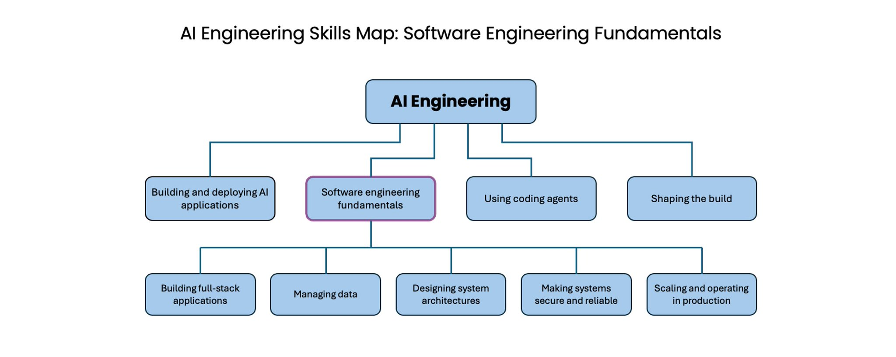

AI 工程技能图：软件工程基本功
AI Engineering Skills Map: Software engineering fundamentals
- 分类
- AI
- 来源
- X · @AndrewYNg
- 原文
- 整理
- 原文链接
- 原文
先看这五句 / Highlights
译者补充，不是原文。
- 即使用 Agent 写完全部代码，不懂软件基本功就不知道有哪些取舍，更谈不上把 Agent 往对的方向开。
- 凭感觉 vibe code 能做出简单应用，但常在延迟、可用、一致、可靠、可维护、简单和成本上选错。
- 最要紧的五块：全栈应用、管理数据、系统设计、安全可靠、生产扩缩与运维。
- 数据底座难改，又给 AI 当上下文；选错了，模型也不知道自己不知道。
- 死记语法在过时，但真正懂软件怎么工作的人，会大幅胜过不懂就 vibe code 的人。

智能体编程让软件工程基本功发生了怎样的变化？即便你用 coding agent 写出全部代码，理解软件基本功仍然重要：你要用它来把 agent 往你想要的取舍上开——或者，哪怕先知道有哪些取舍可以做。此外，当你在做一款 AI 应用时，AI 内核往往是通过一层更宽的软件应用来表达的，而你也会想参与构建或塑造这层应用。
不懂软件基本功就 vibe code（凭感觉写代码）的新手，也能做出简单应用，但这往往让 coding agent 在延迟、可用性、一致性、可靠性、可维护性、简单性和/或成本上做出糟糕的取舍。这种情况下，开发者甚至不知道这些取舍的存在，因此也不会把 agent 往适合自己应用情境的正确决策上开。
本文说明，我们对 AI Engineering Skills 的研究认为，软件工程里最要紧的是这些。你需要擅长：
- 构建全栈应用
- 管理数据
- 设计系统架构
- 让系统安全可靠
- 在生产中扩缩与运维
构建全栈应用
智能体编程让许多原先角色更专（例如前端开发或移动端开发）的开发者，能够承担更宽的全栈角色。Coding agent 能帮你处理开发过程中你不太熟的那些部分。不过，理解全栈实际上如何工作仍然重要。熟练的开发者理解前端和后端系统的关键组件与概念，包括 UI 组件、缓存、页面渲染、API 选型与设计、认证、状态与会话管理、异步处理、数据持久化、测试、安全，以及无障碍。
管理数据
数据值得特别关注，因为它是软件建于其上的底座，而且相对难改（即便有 agent 帮忙做迁移）。当你懂得如何管理数据，就能想清楚访问模式，并据此决定存什么、存多久。你能识别正确的数据模型，并选择合适的存储类型（例如关系表、文档、键值或图）与基础设施，而这又会影响速度、可扩展性、可用性、可靠性和成本。你理解事务、并发，以及如何保证数据干净、一致、新鲜。需要时，你能落实恰当的隐私、治理与合规。你知道如何管理数据生命周期。
随着应用演进，你也知道如何让数据架构跟着演进。决定如何管理数据，需要大量由人提供的上下文。你的 AI 系统会从数据源拿到自己的输入上下文，所以如果数据架构选得差，AI 并不知道自己不知道什么。正因为如此，要把这件事做对，需要有相关上下文、又擅长 AI 工程的人——也就是你！——出手干预。如何为 agent 搭建数据基础设施——而不只是为传统软件或人——也是一个快速演进的领域，你应当随着这个领域的演进而持续调整最佳实践。
设计系统架构
当你理解软件与数据全栈的主要组件，就更有条件决定如何把这些零件拼在一起。好的系统设计要求你理解软件打算做什么（多少用户？延迟有多重要？成本有多重要？等等），这样才能在应用平台、前端与后端的边界、系统分解、应用状态放在哪里，以及架构粒度（单体 vs. 微服务）上做出选择。你还要选择技术栈（编程语言、运行时、组件/前端/后端框架、数据技术）——有时会先跑实验评估选项，再敲定一个。
此外，正确的架构是一个移动靶，取决于项目所处阶段。你为快速原型选的简单架构，未必适合做第一套生产系统，而那一套随着应用扩缩也可能再变。做这些决定，需要对软件组件和应用情境都有深厚的技术理解，这样你才能设计——并演进——架构，做出更好的取舍。
让系统安全可靠
要构建可靠系统，你应当知道如何制定测试策略来核验系统的正确性：单元测试与集成测试怎样搭配、用哪些框架、覆盖到什么程度。你也知道如何围绕可能的失败来设计——如何处理失败（例如某个 API 撞上限流）、内建优雅降级，以及把失败的爆炸半径压到最小。此外，与其先写软件、再回头想怎么加固，“shift left” 运动正在把安全工作往生命周期更早处推（在传统项目时间线上就是往左移）。正如所有开发者都在往全栈开发者走，许多开发者现在也部分是安全工程师。你现在可以用 AI 工具扫描代码里的漏洞、检查依赖有没有供应链注入、审视云配置的攻击面。但要把这件事做好，仍然需要一些安全知识。
在生产中扩缩与运维
要服务真实用户，你必须知道如何把软件部署到生产。你会受益于知道如何执行软件开发生命周期（SDLC）：除了构建和测试，还包括配置部署环境、决定发布策略、应用部署自动化（CI/CD），以及理解基础设施即服务（IaaS）。
在生产中运维，需要落地可观测工具、设置告警、管理事故。最后，要扩缩你的应用，你应当理解真实负载，并知道如何扩服务器、做负载均衡，以及调整数据基础设施（通过分片、索引、复制），或做架构变更，好让系统适应规模。最后，理解版本控制、代码评审、依赖维护、以及如何管理技术债这类编码最佳实践，能帮你持续演进系统。
收束
Coding agent 已经改变了我们如何构建软件，包括不含任何 AI 组件的软件。编码知识的某些部分——比如死记语法——正在过时。但真正深入理解软件如何工作的开发者，会大幅胜过不懂就 vibe code 的人。
理解软件基本功（再加上 AI）也帮你弄清软件能做什么、不能做什么。这让它们成为你如何使用 coding agent、以及如何塑造建造过程的重要上下文。这些我会在后续文章里讨论。